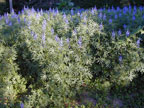
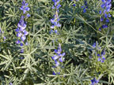
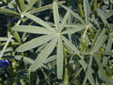
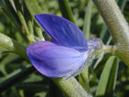
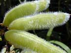
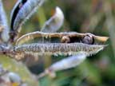
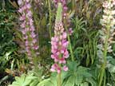
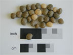

Blue lupin
Lupinus angustifolius
Other names
lupin, field lupinDescription
Annual herb up to 1.5 tall. Showy pea like flowers grow in long terminal spikes. Leaves digitate with 5 - 9 leaflets which are linear, oblong and covered in soft hairs. Fruit is flat pod constricted between the seeds. Flowers can be variable colours from white through to pink, red, purple, blue and also yellow.
Similar plants
Garden lupins are selected forms of blue lupin; the forage crop nearly always has blue flowers. Tree lupin is similar but is woody and usually has yellow flowers.
Distribution
Throughout NZ, preferring the sunnier, drier regions, esp S. Island east coast.
Toxin
Produced by fungus Phomopsis leptostromiformis, which colonizes dead lupin plants (especially the yellow and white varieties, blues are partially resistant). Phomopsins are mainly located in the coarser, lateral stems. Fungus is always present, producing as many as a dozen toxins but of these d lupanine is the most toxic. Only once the plant is dead does the fungus begin alkaloid production. The toxin can remain within the dead material for years, is not destroyed by time or drying and is found in hay of the plant. Lupin angusifolius is the only species known to cause toxicities in New Zealand. The toxin is most concentrated in the seeds and the plant is the most dangerous in the seeding stage. Several toxic alkaloids are known to be present in lupins but poisoning from alkaloids has not been reported in New Zealand.
Species affected
May affect sheep, also cattle, goats, donkeys, horses, pigs and deer.
Clinical signs acute
Generally manifest around summer and autumn. In the acute form following the ingestion of a large volume of the plant over a short period of time the animal is seen to show dyspnoea, and inappetence, ketosis, convulsions and hyperexcitability. Death is due to respiratory paralysis. Mainly attributable to toxic hepatocyte injury (isolated cell necrosis, hepatic enzyme leakage with loss of metabolic and excretory function), jaundice is however an inconstant sign. Sheep may become photosensitive, and cattle show excessive lachrymation and salivation. Death can occur within 2 14 days.
Clinical signs chronic
In subacute cases: star gazing, eye rolling, head pressing and general incoordination. Ingestion by pregnant animals may result in abortion, birth of dead neonates, also known as crooked calf disease, may be seen as a result of the teratogenic effects of the toxin. Manifested in calves as misaligned joints, twisted bones,curvature of the spine, twisted neck and cleft palate. Although often born alive these calves rarely survive for very long.
Post mortem signs
Varies. Acute lupinosis: jaundice and fatty liver change. Often ascites and oedema. Caecum distended with dry, hard faecal material. Evidence of myopathy (i.e. pale streaking). Chronic lupinosis: jaundice is not a common feature. The liver is small, hard, copper or tan coloured and is often misshapen. Rumenal contents are often very watery. Ascites is possible, and there may be some muscle wastage.
Diagnosis
Presence of plant in digesta, climate and season, clinical signs and post mortem lesions.
Differential diagnosis
Copper, organophosphates, sporidesmin, pyrrolizidine alkaloids (ragwort), Panicum, ngaio, urea toxicosis / renal blockage, lead, mercury poisoning, strychnine, cytotoxic oedema, spinal trauma, leptospirosis
Treatment
Primary aim is to stimulate appetite; use of supplementary feed such as grain, lucerne hay or other high quality feed is indicated. Unwise to feed high protein supplements or urea due to liver dysfunction. Anorexic sheep may be encouraged to eat, by spraying feed with molasses, butyric acid or aniseed essence. Lupinosis may result in high liver copper, and low liver zinc levels. Treatment with zinc can overcome the deficiency and displace copper from liver, possibly increasing appetite. Lupins should be removed from grazing pasture immediately.
Prognosis
Death is common in acute cases, lower mortality rates if cases are chronic. In subacute cases, deaths may occur up to two months after removal from lupins.
Prevention
References
Connor, HE, The Poisonous plants in New Zealand, 2nd ed.,1977, Government Printer, Wellington
Parton K, Bruere A.N. and Chambers J.P. Veterinary Clinical Toxicology, 2nd ed. 2001. Veterinary Continuing Education Publication No. 208
 |
 |
|
 |
 |
|
 |
 ripe seed pod |
|
|
 |
 |
|